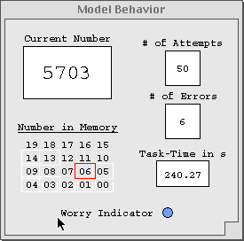
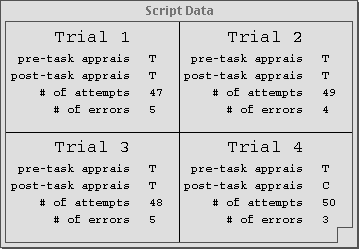

Main Getting Started Using the Interface
Quick Reference:
Data from a single run is best obtained through the Model Behavior window. Below is an image of said window after a run. As you can see, the number of attempts and errors that the model made throughout the run are displayed here.

Below is what the script data window looks like after one 4-trial script.
This window was created using the SCRIPT 1 button on the control panel.

As noted in the document Using the Interface, output from longer scripts is written out to files in the model directory. Here you will find a sample of what the processed data file will look like.
Sample Output from Script 1 Condition
Begin File "Data"---------------------->
Model Data File for Script
Created 1/25/2002
All runs in condition THREAT
Number of runs: 100
Caffeine level: 0
Worry OFF
PARAMETER SETTINGS
G 20.0
GA 1.0
ANS 0.011
PM T
MP 3.7
PAN NIL
EGS 1.0
BLC 0.0
ERA NIL
ER T
RT -0.12
DAT 0.04
LF 0.04
Average number of attempts: 46.20 SD:
4.83
Average number of errors: 4.10
SD: 1.15
<--------------------------------End File
Sample Output from Script 4-Trial Blocks
Begin File "Data"-------------------->
Model Data File for Script
Created on 2/5/2002
Four-Trial Blocks - Initial Appraisal: CHALLENGE
Number of runs: 10
Caffeine level: 336
Worry OFF
PARAMETER SETTINGS
G 20.0
GA 1.0
ANS 0.011
PM T
MP 3.7
PAN NIL
EGS 0.05
BLC 0.0
ERA NIL
ER T
RT -0.12
DAT 0.035
LF 0.04
Average number of attempts: 52.65 SD:
2.90
Average number of errors: 4.22
SD: 0.91
Number of runs in Threat: 10 (25.0%)
Number of runs in Challenge: 30 (75.0%)
<------------------------------End File